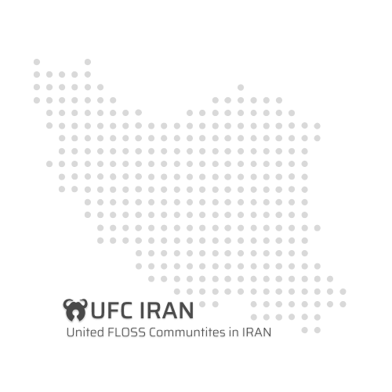

متن طرح
مخزن گیتهاب
فوسفا
نشست ها
این طرح با هدف همگام سازی تمام جوامع آزاد فارسی مفید قرار است یک جو صمیمی و دوستانه میان جوامع آزاد ایران به وجود آورد و مانع ضرر رساندن جوامع مضر به نرم افزار آزاد در ایران شود.
این طرح از سوی جامعه فوسفا در حال اجرا است، طبق قوانین ذکر شده در این طرح جوامع پس از پزیرفتن آن عضو اصلی و بنیادین طرح خواهد بود و عملا پلی ارتباطی میان تمامی جوامع با یک دیگر خواهد شد؛ بنابراین تمام جوامع موظف اند در انتخابات هیئت مدیره فوسفا حضور داشته باشند و علاوه بر آن یک فرد از جامعه آنها در هیئت مدیره فوسفا حضور خواهد داشت.
در طی سالهای اخیر هیچ مکان خاصی برای نوشتن و تولید محتوای فارسی در مورد نرم افزار آزاد وجود نداشته است و اکثر جوامع محتوای خود را در سرویس های انحصاری منتشر میکرده اند... اما تمام جوامع عضو این طرح میتوانند از فوسفا ساب دامینی ویژه خود گرفته و بر روی آن وبلاگی ایجاد نمایند، به علاوه میتوانند از جایگزین های آزاد دیگر نیز استفاده به عمل آورند.
در سال های اخیر شاهد شکل گیری تعداد زیادی رویداد آزاد بوده ایم، به خصوص در دوران کرونا نیز رویداد های آزاد افزایش یافته است هر چند از حضوری به مجازی تغییر کرده اند اما در کل تعداد آنها افزایش یافته است... حالا با متحد شدن جوامع ما میتوانیم رویداد های بزرگتری برگزار و مدیریت کنیم.. بنابراین خوب است تمامی جوامع در اطلاع رسانی رویداد ها مشارکت داشته باشند و حداقل تلاش خود برای معرفی دگر جوامع عضو طرح را به عمل اورند.
از ابتدای شروع به کار فوسفا قرار بر این بود که مدیریت آن جامعه محور باشد اما به دلایلی نمیتوان به طور کامل مدیریت آن را جامعه محور کرد.. اکنون که یک جمع گسترده از جوامع آزاد گرد هم آمده اند شرایطی ایجاد شده تا طرح هیئت مدیره جامعه محور فوسفا نیز برگزار شود؛ طبق این طرح تمامی افراد دارای حداقل 6 ماه حضور فعال در جوامع آزاد متحد میتوانند در انتخابات هیئت مدیره فوسفا که در اصل مرکزیت جوامع آزاد متحد است کاندید شوند به علاوه تحت هر شرایطی از هر جامعه میبایست یک نفر در هیئت مدیره حضور داشته باشد...
در ابتدا طرح اشاره شد که قرار است جوامع مضر را ریشه کن و جوامعی پاک داشته باشیم ، فلذا طبق ماده 5 طرح جوامع متحد قرار است با تغییر روند مدیریتی و بهبود این جوامع این موضوع را حل کرده و در صورتی که مدیران آن جامعه در این روند مقاومت کنند و افراد اون جامعه نیز از مدیریت جامعه خود ناراضی باشند..جوامع آزاد متحد آنها را در تغییر مدیریت آن جامعه یاری مینماید، از سویی برخی از جوامع به قدری مضر هستند که قابل بهبود نیز نیستند در اینجا تصمیم بر عهده هیئت مدیره است تا با تصمیم خود راهکاری برای آن جامعه اندیشه کنند.
نرم افزار آزاد همواره کمترین مشکل در آمدی را به خود اختصاص میدهد به عنوان مثال بنیاد هایی نظیر KDE و Gnome در آمد خود را با کمترین مشکل کسب و هزینه های خود را پرداخت میکنند اما دلایلی باعث شده این موضوع در ایران برعکس باشد و فرهنگ دونیت جای خود را در میان فرهنگ ایرانی پیدا نکرده باشد؛ لذا یکی از اهداف جوامع آزاد متحد ایجاد سکوی پرتابی برای نرم افزار های آزاد ایرانی خواهد بود و جوامع با کمک یک دیگر به محبوب شدن نرم افزار های آزاد ایرانی سرعت میبخشند..
بسیار پیش آمده است شرکت/استارتآپ های ایرانی در حمایت از جوامع آزاد فعالیت هایی انجام داده باشند و جوامع آن حمایت ها را پس زده باشند اما طبق ماده 7 این طرح تمامی جوامع متحد میتوانند و ملزم هستند در صورتی که لطمه ای به نرم افزار آزاد و جامعه آنها وارد نمیشود از شرکت های مختلف در تامین هزینه ها/سرور یا ... استفاده به عمل اورند.
در هیئت مدیره، از هر جامعه عضو یک نماینده حضور دارد. علاوه بر نمایندگان جوامع، به میزان حداکثر (نمایندگان جوامع + ۲) نماینده کل که از سوی تمامی جوامع با رایگیری گزیده میشوند نیز حضور دارند. در صورتی که نامزدهای نمایندگی کل از این مقدار فراتر رود، نماینده پایدارگر بنا به صلاحدید خود میتواند به میزان نامحدودی نماینده علی البدل به هیئت مدیره اضافه کند، در صورت کنارهگیری یا برکناری یکی از اعضا، پایدارگر میتواند ایشان را به نمایندگی کل ارتقا دهد. هر ۲ سال اعضای هیئت مدیره انتخاب میشوند، بجز پایدارگر که دوره نمایندگی او برابر دو دورهٔ عادی است (۴ سال).
این نماینده در رایگیری داخلی در بین اعضای هیئت مدیره انتخاب میشود. هر دورهٔ او، برابر ۲ دورهٔ دیگر اعضاست و میتواند به مدت دو دورهٔ پشت سر هم (۴ دورهٔ عادی) این نقش را بگیرد. تمامی دسترسیهای مدیریت مرکزی را داراست؛ در صورت برابری آرا میتواند علاوه بر رای معمولی خودش، به اندازه یک نماینده کل رای بیشتر بدهد. همچنین در صورتی که نمایندهای صلاحیت خود را از دست بدهد، پایدارگر میتواند پس از نظرسنجی و رایگیری همگانی در صورتی که اعضای جوامع موافق باشند، حق رایاش را کاهش دهد یا رایاش را بیاثر کند (تبدیل کردن به عضو علی البدل) یا وی را از هیئت مدیره به طور کامل برکنار کند.
این نماینده در رایگیری داخلی در بین اعضای هیئت مدیره انتخاب میشود. حداکثر میتواند دو دورهٔ پشت سر هم این نقش را بگیرد. دسترسیهای لازم توسط نمایندهٔ پایدارگر به وی داده میشود به طوری که از بعد از پایدارگر موثرترین نقش را دارد. ارشد شدن تفاوتی در حق رای معمولی او ایجاد نمیکند، اما میتواند علاوه بر رای معمولش، رای به بیاثر شدن رای یکی دیگر از نمایندگان (بجز نمایندهٔ پایدارگر) نیز بدهد.
در صورتی که پایدارگر به این نتیجه برسد که ارشد صلاحیت ارشد بودن را ندارد، یا ارشد صلاحیت پایدارگر را قبول نداشته باشد؛ نماینده شکاک میتواند برکناری نماینده مشکوک را به رای بگذارد، در این رایگیری ویژه باید حداقل ۶۰٪ نمایندگان موافق برکناری باشند.
هر جامعه عضو یک نماینده در هیئت مدیره خواهد داشت؛ جوامع عضو میتوانند فرد مشخصی را در داخلشان گزینش کنند و وی را به عنوان نمایندهشان راهی هیئت مدیره کنند. اگر نماینده پایدارگر یکی از نمایندگان جوامع را با نظرسنجی برکنار کند، از آن جامعه درباره ماندن در میان جوامع متحد و نماینده جامعهشان نظرسنجی خواهد شد.
هر عضو از هر یک از جوامع عضو به شرطی که دستکم ۶ ماه در دستکم یکی از جوامع آزاد عضو فعال بوده باشد میتواند نامزد نمایندگی کل شود. شمار ایشان نمیتواند بیشتر از (نمایندگان جوامع + ۲) باشد.
اگر نامزدهایی باشند که با اختلاف کمی نتوانسته باشند نمایندهٔ کل بشوند، با تصمیم نمایندهٔ پایدارگر نمایندهٔ علی البدل خواهند شد. مانند نیمکتگرمکنها هستند (در رایگیریها اثرگذار نیستند (حق رای ندارند) اما میتوانند به دیگر نمایندگان در حل مسائل کمک کنند یا مشاوره دهند). در صورت نیاز نمایندهٔ پایدارگر میتواند یکی از ایشان را به یک نماینده کل تبدیل کند.
جدا از آرای ویژه نمایندگان پایدارگر و ارشد که در ماده ۸ توضیح داده شد، نمایندگان در صورت تمایل میتوانند آرای معمولیشان که بر اساس فعالیتشان در جوامع محاسبه میشود را تا سقف معین افزایش دهند. امتیازدهی به فعالیت نمایندگان در دورههای سه ماهه (میانگین فعالیت هر ماه در دوره سه ماهه) طبق جدول زیر صورت میگیرد :
| فعالیت | حد نساب نمایندگان کل | حد نساب نمایندگان جوامع | امتیاز |
|---|---|---|---|
| ارائه پیشنهادی* مفید در نشستها | یک پیشنهاد در هر دوره | مشترک | ۱ |
| تولید محتوای نوشتاری یا کمک به آن | ۱۰ بند در ماه | ۱۵ بند در ماه | ۳ |
| تولید محتوای چندرسانهای | ۲۰ دقیقه در ماه | ۴۰ دقیقه در ماه | ۵ |
| ایجاد/مشارکت در پروژه آزاد (بیرون از جوامع) | ۱ مشارکت* در ماه | مشارکت* در ماه | ۷ |
| ایجاد/مشارکت در پروژه آزاد یکی از جوامع عضو | ۱ مشارکت* در ماه | ۲ مشارکت* در ماه | ۹ |
| پیشنهاد*/برگزاری/کمکبه برگذاری رویداد در یکی از جوامع عضو | یک رویداد در هر دوره | مشترک | ۱۳ |
| پیشنهاد*/برگزاری/کمکبه برگذاری رویداد مشترک در جوامع آزاد متحد | یک رویداد در هر دروه | مشترک | ۱۸ |
پیشنهادات به شرطی موجب افزایش حق رای نماینده خواهد شد که آن پیشنهاد به تصویب برسد/آن رویداد در نهایت برگزار شود. تولید محتوا به شرطی حساب خواهد شد که محتوای مفید باشد؛ محتوای مفید یعنی محتوایی که به آگاهی مخاطب خود میافزاید. هر مشارکت در پروژه برابر اضافه کردن یک ویژگی جدید با نوشتن برنامه یا پیشنهاد ویژگی (به شرط عملی شدن آن) یا رفع اشکال یا کمک به آن (آزمایش روی دستگاه خود و ارائه اطلاعات مفید) یا ۵ گزارش ایراد است.
نمایندگان پایدارگر و ارشد میتوانند تغییر ساختارها، قوانین و حتی نامها و نشانها را به رای بگذارند. در این رایگیری ویژه، باید حداقل ۶۷٪ نمایندگان (کمی بیش از ۲/۳) موافق باشند. سایر نمایندگان اگر به ساختارها، قوانین، نامها و نشانها اعتراض دارند، باید یکی از نمایندگان پایدارگر یا ارشد را قانع کنند تا رایگیری صورت گیرد.